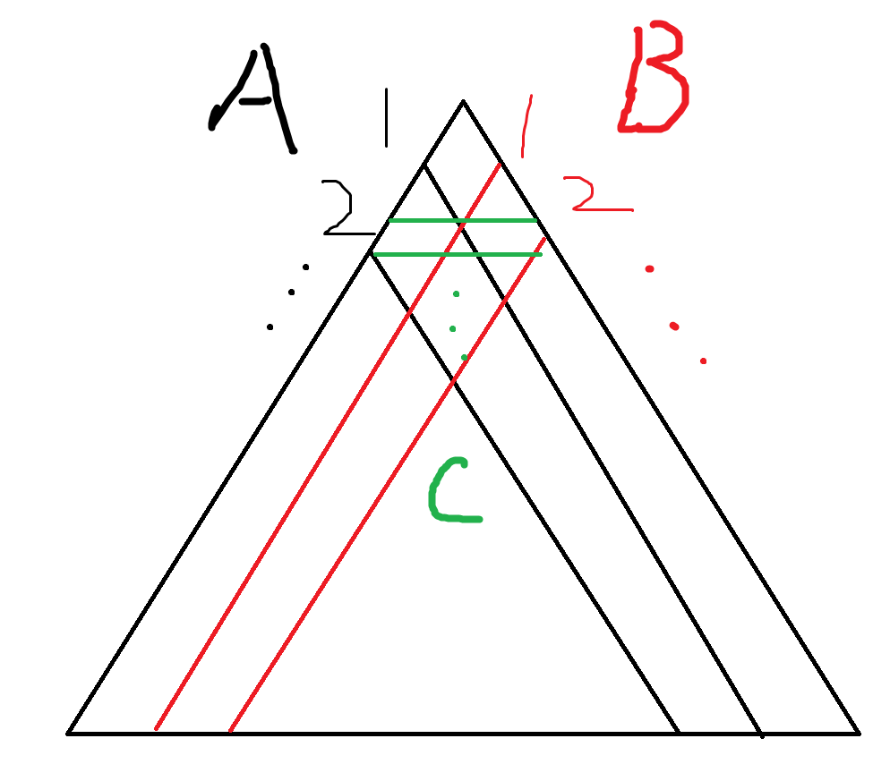
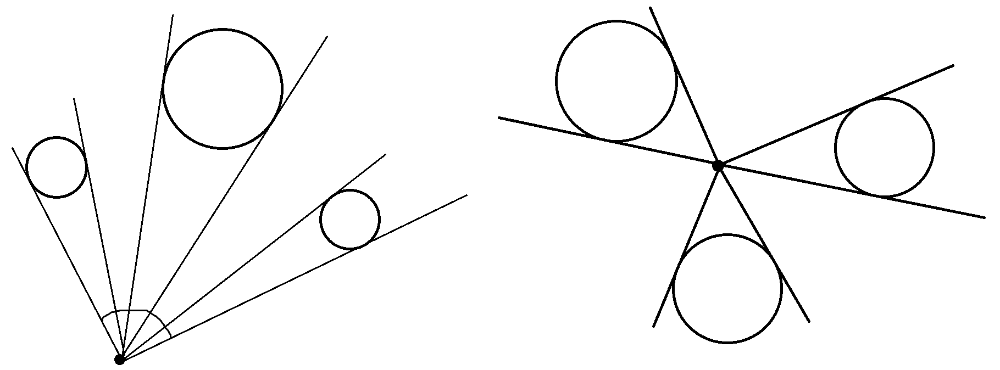

OCPC Winter 2023 D9 赛后总结
https://codeforces.com/gym/104334
我对这场比赛的评价是，逆天。
C
做法并不是很困难，但是想不到就很操蛋了。
简单来说，就是 
简单来说，把三种类型的操作记为 A,B,C 。
做法就是：
显然，每一个操作要么不操作，要么操作一次，因为操作的先后顺序并不影响结果。
又不难发现，只要枚举 $A_1,A_2,B_1$ 就足以得到所有的 A,B,C，枚举一下就行了。
又不难发现，实际上，我们可以任意指定两种操作全部翻转，不会使三角形发生变化，所以我们实际上可以认为 $A_1,B_1=0$ ，枚举 $A_2$ 就行了。
时空复杂度：$O(n^2)$
可以做到时间复杂度：$O(n)$ 。
做题时的历程：
队友1：“这道题目本质就是给你 $3n$ 个元，$\frac{n(n+1)}{2}$ 个方程组，让你判断是否有解，有可能是存在某种方法缩减方程的规模，或者是可以证明某些方程就是没有用的，或者是某些方程起决定性的因素。”
此时我想：“从这个角度想感觉有点困难，很少从方程组的角度去思考问题。”
然后我就自顾自的去乱搞了。
于是就想了个贼奇怪的写法，首先此时我发现了 $A_1,B_1=0$ 的情况，又发现根据一些情况可以解出奇数位置的值。
队友1：“你这不就是解方程消元的过程吗？”
我：“好像很有道理的样子。😂”
接着我又发现，根据已知的确定的奇数位置的权值，我可以确定 $A,B$ 中偶数位置的相同与否，
只要指定了 $A_2$ 貌似就可以搞出绝大多数的位置，其余位置貌似也可以陆续确定下来了。
队友1：“那你为什么不一开始就枚举 $A_2$ 呢？这样还省了偶数时并查集判断相同与不同的部分。还有，有个队很快就 AC 了这道题目，以我对他们的了解，应该存在更加简单的做法。我觉得应该可以一行一行扫下来，具体我就不清楚了。”
于是又思考了一会，思考我的做法中其实需要枚举的元只有 $A_2$ ，这样全局的权值都能确定了。
这时我闪过了一个念头，就是队友1讲的，或许奇数部分都不需要去写，直接枚举 $A_2$ 就可以得到所有操作的权值！
然后就知道怎么做了。
所以实际上题解的不难发现并不适用于我 QAQ ，队友1说的对啊。
1 |
|
D
实际上在很早的时候就发现这道题目实际搜索的情况数应该很少，实际的贡献应该是由类似这种情况贡献的。
1 | 111 111 |
但是因为此时 G 更有情况就去做 G 了。
结果做 D 的队友 WA 了，跟我说了一遍他的思路，我突然觉得我能写出比他更短的代码，而且更他清晰，最后二十分钟上机重写，结果暴 WA ，在过了 15 分钟后 AC 了。
悲。
实际上，这道题目比我想象中要难一点，我刚开始的想法没错是没错，但是用到的判断方式是更加巧妙的，我觉得虽然刚开始我的大方向是没有问题的，但是交给我来开这道题目我却不一定能想到这一个判断方法，也就是交给我来开这道题目我是不一定能做出来的，膜拜队友1，Orz。
我的做法是这样子的：
省流：贪心放，能放就放，能产生贡献的只有深度嵌合的两个 piece 所产生的 *2 的影响，而这种情况所占据的格子是一样的，所以贪心放是正确的，至于数量，贪心的过程中统计一下深度嵌合的情况就行了。
顺序遍历整个矩形，观察是否以这个位置作为左上角放下一个 piece 。
不难发现，无论一个 piece 是什么方向，四个角永远都是被占据的，所以我们在判断能够放下一个 piece 但是无法确定方向时，就直接占据四个角，能确定方向就直接放下去。
对于不能确定方向的 piece ，我们需要在四个角标记好这个角属于哪个 piece ，用于后面使用。
然后，就是大型的分类讨论了，这里可以直接看代码。
时空复杂度：$O(nm)$ 。
空间复杂度可以做到 $O(m)$ 。
至于证明，很简单，遵循以下的格式就行了：
归纳法，证明前 i 步满足以下的要求（注：这里说的在一个位置放下 piece 指的是这个 piece 的左上角在这个位置）：
- 已经放下的 piece 一定合法（没确定方向则任意指定一个方向，同时没有确定方向的 piece 在四个边界的中间的位置一定没有被占用）。
- 在存在合法方案的情况下，合法方案在我们已经搜索过的区域会跟我们做出类似的选择：
- 如果一个位置有 piece ，那么合法方案也有。
- 如果一个位置没有 piece ，那么合法方案也没有。
- 如果一个 piece 确定了方向，那么合法方案对应的 piece 一般也是该方向，除了上面举的例子和类似的例子，这种情况下合法方案一定是例子中两种方法的一种。
- 任意一个 piece 所在的 $3*3$ 矩阵如果被包含在搜索过的区域，那他一定已经确定了方向。
归纳法证明就行了。
最后就是判断是否有未被占用的格子。
显然，如果存在合法方案，那么所有的 piece 都必须被确定了，反证法：如果合法方案和这种放置方法类似，那么合法方案无法填满格子，矛盾，证毕。
对于不存在合法情况，如果最后有未确定方向的 piece ，那么一定有未被占用的格子，如果没有，又填满了格子，又放置是合法的，那么显然矛盾，存在合法情况。
然后就做完了。
1 |
|
E
神仙队友 1 直接爆艹，因为他发现如果一个点在圆凸包内，那么必然不存在一条直线使得圆凸包在直线一侧，而点在包外存在，所以直接判断一个这个点是否能以一个小于180度的视角透视看到整个圆凸包。
只要求一下角度就行了。

G
和队友2合力做出来了。
这道题目一开始是队友2负责的，他发现只要对任意两列拉满限制就可以得到最严格的限制，于是开写，但是他没发现题目还有 -1 的情况。
后面 WA 了两发才发现，这时我 A 了 C 开始来帮他，发现其实有可能满足限制的字符串可能不只输入给出的那些。
然后就开始了漫长的讨论沉默寡言的队友加话痨的我：
我：“2-set计数？”
队友2：“咋整。”
我：“不会。”
…
我：“可能是先这样再那样。”
队友2：“emmmm。”
我：“woc，不对啊，怎么可能这么难，不可做啊，不应该是直接算出所有的可能性啊，这应该不可以计数啊，DAG 上怎么记啊，我觉得我们只要判断可能性是不是大于 $n+1$ 就行了啊。”
这时我突然醒悟了，对哦，只要判断是不是大于 $n+1$ 不就行了，这不是随便搞，只要能够在 $O(m)$ 的时间内处理一种可能性不就随便搞了。
然后就是我占用了队伍一半的机时写这道题目，最后竟然强连通都写错的精彩故事，怒交10发罚时，竟然还有两个认识的队伍同样的题目罚时比我们高，乐。
至于怎么 $O(m)$ 时间处理一种情况，很简单，首先，本题中如果一个位置全 $0$ 或者全 $1$ 显然可以直接在图中删去，因为其无法对决定其他位置起到任何的帮助，例如限制是要么你 $1$ 要么他 $0$ ，这个限制显然一点用都没有，而因为其一直是 $1$ ，我们也不可能给出你是 $0$ ，他是 ? 的限制，所以对于这种位置删去即可。
那么就不存在自己连向自己另一个状态的边了，而这个 2-set 又一定有解，存在两个相反的 DAG ，只考虑一个 DAG ，显然，只要点集 $S$ 满足以下要求，那么其就对应一个合法解：
$x$ 在 DAG 上能到 $y$，且 $x$ 属于 $S$ ，那么 $y$ 也属于 $S$ 。
然后就是枚举这样的点集了，直接 DFS 。
假设所有点一开始都在点集中。（一开始都不在也是一样的）
按照拓扑排序进行搜索（主要是为了缩减时间复杂度和判重，记得是要在缩点后的图跑，否则可能会 TLE ）：对于一个点，如果能到达他的点都被删了，那么他可以被删，每删除一个点，就能产生一个新的点集。
然后就 DFS 一个位置一个位置判断，直到 DFS 完或者发现出现了一种输入中没有的点集就退出，至于判断两个点集是否相同，可以 Hash 或者 01Trie 。
时空复杂度：$O(m(n+m)+\frac{nm^2}{w})$ 。
PS：但是常数巨大，跑了 3712ms ，差点超时，不过也有可能是我写的太丑导致的，毕竟赛场上赶时间，写丑一点很正常，能过就行不能过另说。
UPD：啊，$nm^2$ 跑的过去？比我短，还比我快？啊？做法为 DFS 每次尝试暴力加入一个点，然后将其能到达的点全部加入进去，跑出一种可能性最坏可能把所有边都跑一遍，所以是 $nm^2$ 的。
1 |
|